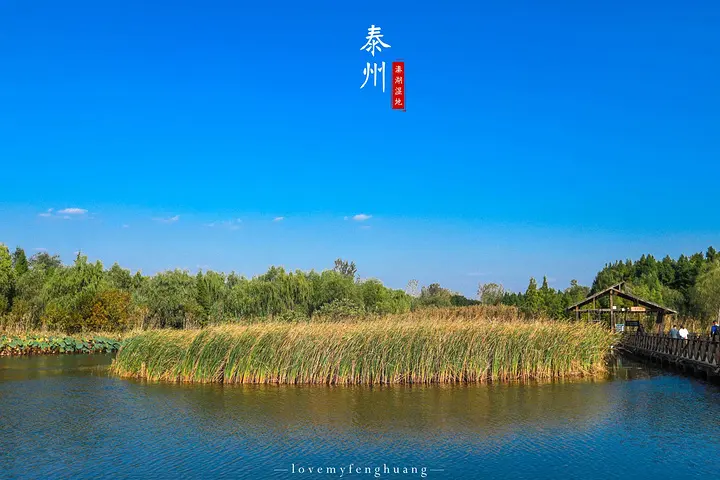
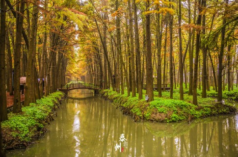
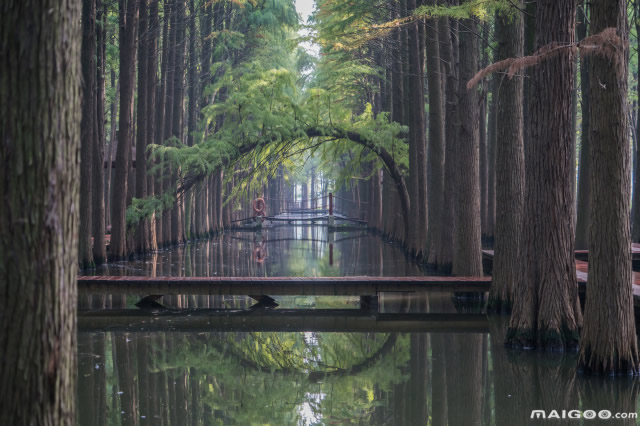
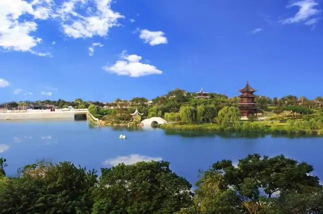

溱湖国家湿地公园，是由国家林局批准设立的江苏首家国家级湿地公园，2012年3月31日被评为国家5A级旅游景区。地处江苏中部，江淮之间，是著名京剧艺术大师梅兰芳先生的故乡——地级泰州市旅游业业的重点规划，并已作为江苏省重点旅游开发项目列入《江苏省旅游业发展”十五“计划和2020年远景目标纲要》。溱湖国家湿地公园总面积26平方公里，区内的湖泊、河流等合占景区总面积37%左右，素有“水乡明珠”之称。湛蓝的湖泊、交织的河网、星罗棋布的洲滩岛屿，以及特有的湿地生态环境与里下河水乡民俗文化，是其独有的景观特色。经过长期的积累和发展，园内现已形成以溱湖为主体的水环境景区，以“麋鹿故乡园”为品牌的湿地生态景区，以“全球生态500佳”为基础的生态农业园区，以溱湖地热资源综合开发利用而形成的温泉休闲度假区，以及以溱潼古镇、中国溱潼会船节为代表的人文景观。公园东临宁靖盐高速公路，在景区内留有互通口；南临宁启铁路火车站，现有开往北京、上海、深圳等全国六大城市的始发列车；四围紧邻上海、南京、苏锡扬等全国著名旅游城市，便捷的高速公路使得从风景区抵达省内的任何地点都可做到“早出晚归”。
泰州凤城河风景区是国家4A级景区，以泰州护城河为主体兴建的风景区，包括环城河及其周围共256.8公顷的范围。区内主要为三区：滨水景观休闲区、城市历史文化区、生态景观游赏区。泰州古环城河全长6650米，“碧水绕城”成为现代城市不多见的自然生态景观；泛舟河上，会充分领略到“州建南唐”的历史厚重。在初建于宋的“江淮第一楼”望海楼上凭栏俯瞰，全国独一无二的“戏曲文化三家村”、世界名僧辈出的佛教庙庵群落、中国历史独有的盐税建筑遗存都会尽收眼底。存量丰富、具有“泰州格”的明清古建筑记载了诸如范仲淹、王安石、文天祥、岳飞、孔尚任、柳敬亭、林则徐等一大批历史名人的故事。
 
泰州天德湖公园座落在泰州市周山河街区，占地面积约1500亩，水域面积500亩，国家AAAA级旅游景区。 泰州天德湖公园分为“动”、“静”两区域。“静”区以13个城市的展园为主，分布于天德湖的西北侧，以文化交流和科普教育为特色，突出静态休闲、节能环保理念，突出生命的神秘绮丽，提升独特的地区吸引力;“动”区以休闲娱乐为主，主要分布在天德湖东侧，突出民众参与，为后续深度开发、提升公园的互动性和趣味性奠定基础。泰州天德湖公园以“山为骨、水为脉、绿为肤”，为泰州城市主轴上的绿色核心。以文化交流和科普教育为特色，突出静态休闲、节能环保理念，取意“山水画”的神韵构思主题，由诗意传画境，强调景观的自然情趣和精神体验。为打造生态性、公益性、经济性的开放式公园奠定了基础。天德湖公园已经打造成为当地市民最好的休闲生态景区。